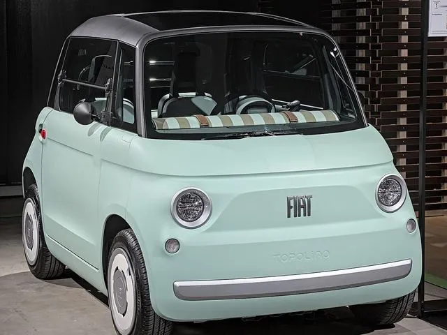
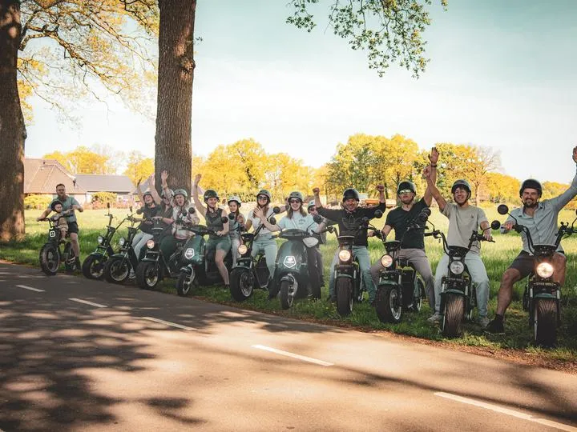
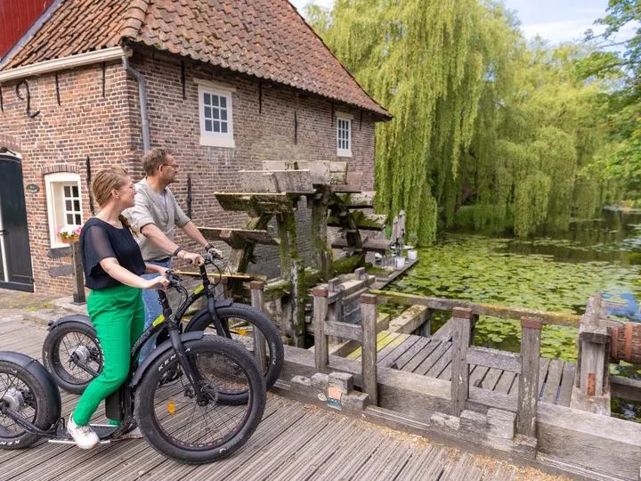
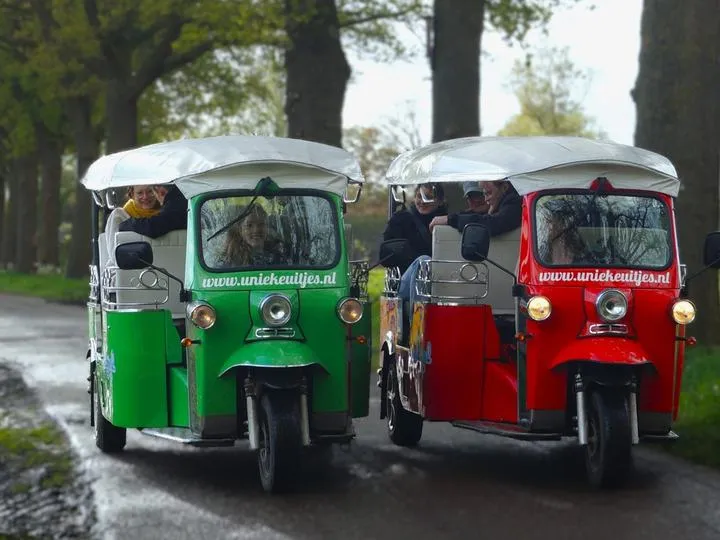

Topolino's
Compact en stijlvol vervoer met VIP-uitstraling. Ons meest gevraagde canvas voor een wrap.
Klein, opvallend en het beste canvas voor een wrap.
v.a. € 125,- per dag

Hier komt straks de echte tekst te staan. Deze regels dienen alleen om te laten zien hoeveel ruimte een alinea inneemt en hoe de regels afbreken op verschillende schermformaten.
Deze alinea is met opzet iets langer, zodat je kunt zien wat er gebeurt als een blok meer tekst krijgt dan gemiddeld. De echte tekst schrijven we pas als de vormgeving vaststaat.
Bij de prijs inbegrepen
- WA-verzekering
- 21% btw
- Bezorgen en ophalen
Waarvoor je hem inzet
Van aanvraag tot ophalen
- 01
Je vraagt een offerte aan
Vulzin om de lengte van dit blok te tonen. De echte tekst volgt later.
- 02
Wij bezorgen op locatie
Hier komt straks de echte tekst te staan, ongeveer even lang als deze.
- 03
Rijden, en accu wisselen
Vulzin om de lengte van dit blok te tonen. De echte tekst volgt later.
- 04
Wij halen alles weer op
Deze korte tekst laat zien hoeveel ruimte er is. Nog niet definitief.
Veelgestelde vragen
Hoeveel personen passen er in een Topolino?
Deze tekst staat er om de opmaak te kunnen beoordelen. De definitieve tekst volgt in de copywriting-ronde en wordt ongeveer even lang als dit.
Is een rijbewijs nodig?
Vulzin om de lengte van dit blok te tonen. De echte tekst volgt later.
Hoe lang duurt het wrappen van een Topolino?
Hier komt straks de echte tekst te staan. Deze regels dienen alleen om te laten zien hoeveel ruimte een alinea inneemt en hoe de regels afbreken op verschillende schermformaten.
Kan de wrap er na het evenement weer af?
Deze korte tekst laat zien hoeveel ruimte er is. Nog niet definitief.
Ook interessant

E-Choppers
Snel en wendbaar over grote terreinen. De favoriet voor crewvervoer backstage.
v.a. € 45,- per dag
E-Fatbikes & E-Steps
Compact, stil en zonder rijbewijs te gebruiken. Ideaal voor korte ritten op het terrein.
v.a. € 35,- per dag
TukTuks
Comfortabel groepsvervoer met karakter. Perfect als pendeldienst of voor gastenvervoer.
v.a. € 330,- per dagKlaar om je event in beweging te zetten?
Vertel ons om wat voor evenement het gaat en wat je nodig hebt. We denken mee over de juiste mix en komen met een passend voorstel.